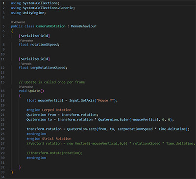
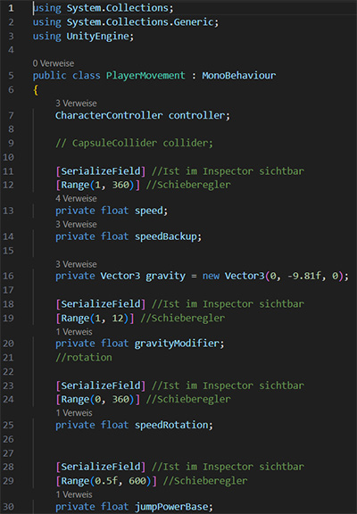
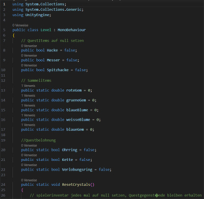
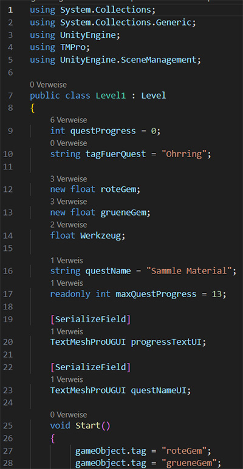
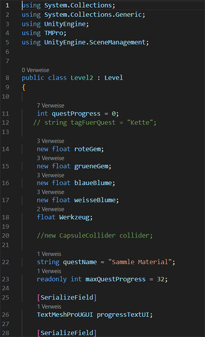
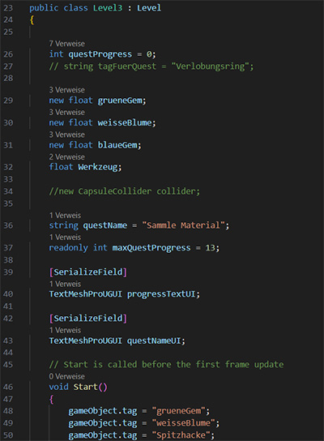
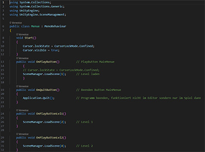
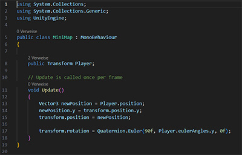

Low Poly Demo - Jahresblume
Den Code habe ich für meine Low Poly Demospiel Aufgabe für die Schule geschrieben. Geschrieben in C# (für Unity).
Klick auf den Titel des Codes oder auf das Bild öffnet den Code in einem neuen Fenster.
Kamera Rotation
Der Code zur Kamera Rotation in meiner Low Poly Demo Jahresblume. Die Kamera befindet sich hinter dem Spielercharakter und bewegt sich bei der Drehung dessen mit.
Charakter Bewegung
Der Code zur Spielcharakter Bewegung in meiner Low Poly Demo Jahresblume. Damit sich der Spieler in der Welt fortbewegen kann.
Level
Der Code zur Klasse Level in der Low Poly Demo Jahresblume. Parent zu den einzelnen Leveln.
Level 1
Der Code zum ersten Level in meiner Low Poly Demo Jahresblume. Dieser erbt von der Klasse Level.
Level 2
Der Code zum zweiten Level in meiner Low Poly Demo Jahresblume. Dieser erbt von der Klasse Level.
Level 3
Der Code zum dritten Level in meiner Low Poly Demo Jahresblume. Dieser erbt von der Klasse Level.
Menü
Der Code zum Menü in der Low Poly Demo Jahresblume. Hier kann das Spiel gestartet, weitergeführt oder beendet werden.
Mini Map
Der Code zur Mini Map in meiner Low Poly Demo Jahresblume. Die Mini Map die im Eck des Spielbildschirms angezeigt wird.